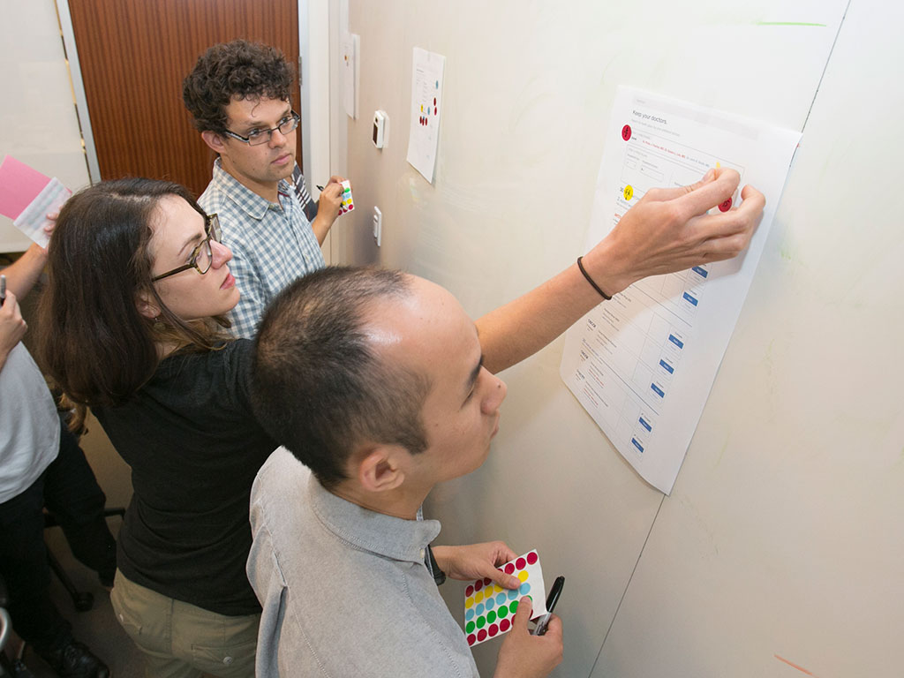
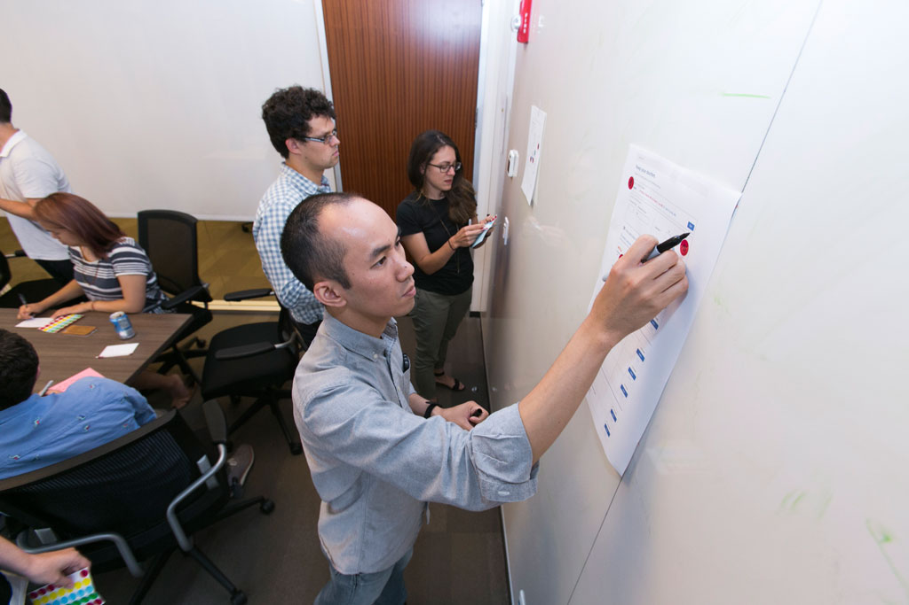
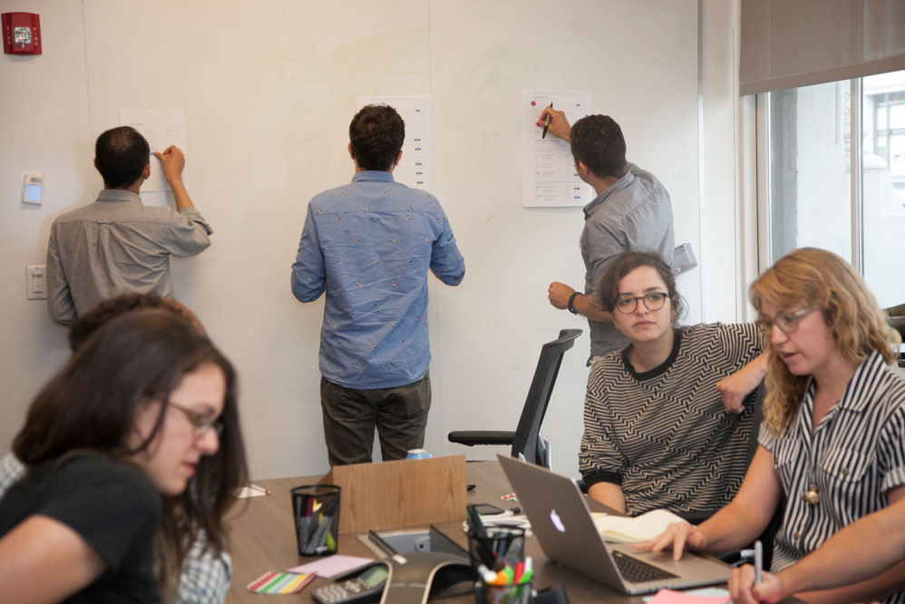
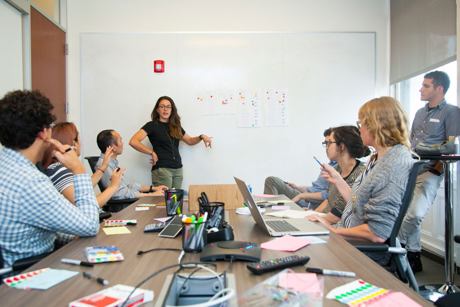
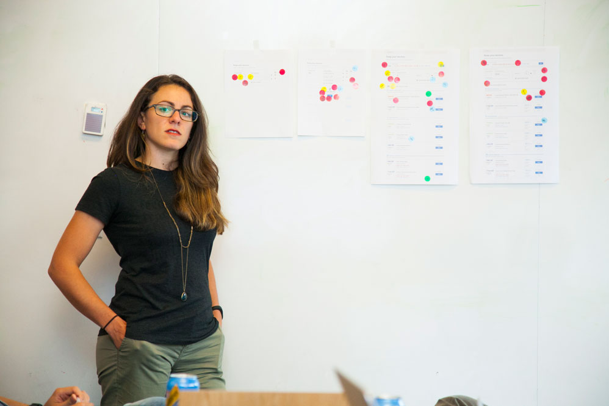
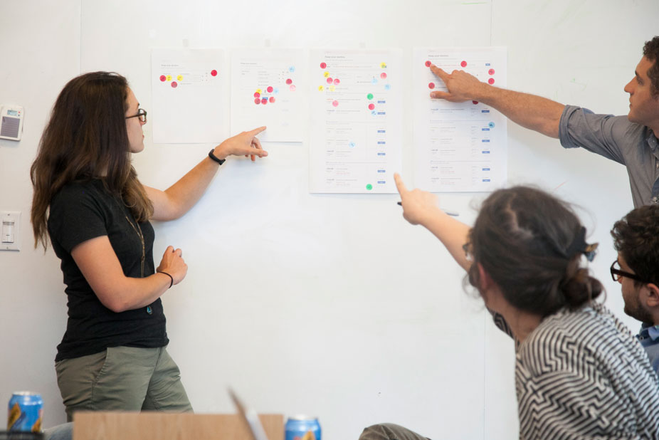
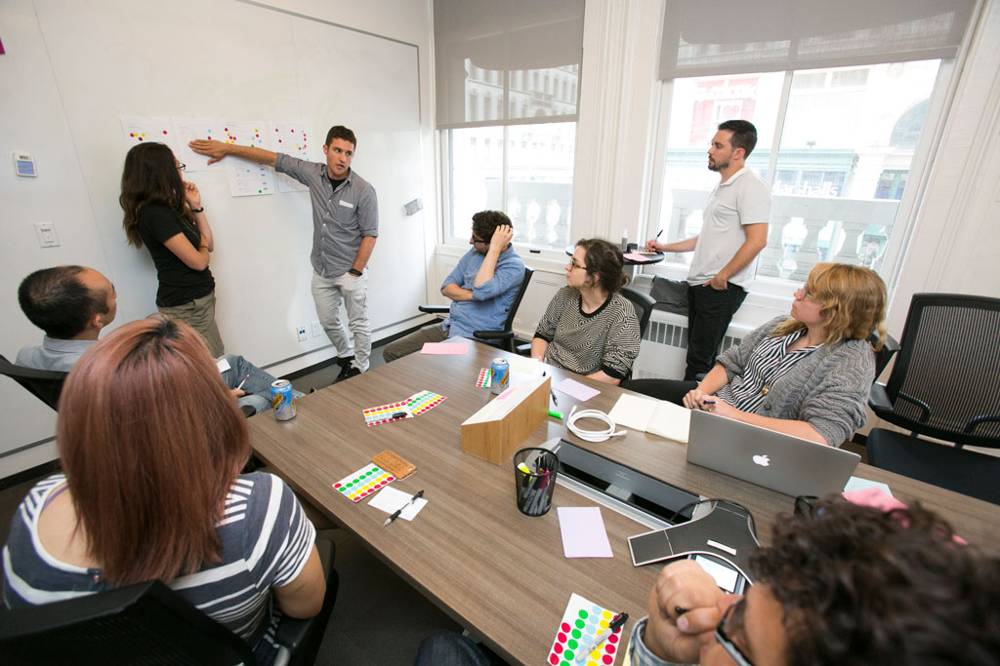

Pivotal Labs • @jackaay
:-) Hi!
The Pivotal Labs Design Toolbox:
Jaclyn Perrone, Fall 2014

time set aside weekly for designers to present their work and collect feedback
designers pair less than often than devs, so it's important to have collab time
coming from design school backgrounds, a lot of us missed the constant feedback loop we had among students and teachers
crit is a way to bring back that supportive, safe and collaborative environment
we meet every Wednesday after lunch
1 hour, two 30 min slots
on Mon/Tues weekly email with 2 things:
"Anyone have anything they'd like to present?"
I also include a gif of Gob Bluth

2 designers to present, 1 facilitator
first designer states the project, problem, type of feedback sought

team reviews design mocks pinned to wall
and projected on the monitor
sometimes prototypes

place dots on areas of the mock we would like to talk about; heatmap!
capture additional notes on index card


Facilitator leads team discussion
Using the dots to go through the mockups linearly
focus on problems, not solutions
let the designer solve the problems; they have way more context (and it's the fun part)



designer keeps dotted mocks & corresponding notecards
share with team and client
incorporates feedback into their workflow

decide between different approaches to a problem
rethink layout / information architecture
help choose topics for user testing / validation
weight of the team's opinion validates designer's direction to client (team really excited about option A)
Goals
open doors to getting feedback more easily
fresh eyes are important (keeps the project healthy)
even the act of describing a project can give one great clarity
Goals
get help (5 pairs of eyes)
practice receiving feedback (good for minimizing ego)
learn to not take it personally
Goals
Exposure to other projects
practice giving constructive feedback, not solution-based
opens door to follow-up pairing
Goals
reassurance that many design experts would come to similar conclusions
access to talents outside allocated designer
talking points for stakeholder
validation for stakeholders
designers at Labs!
PMs, anchors, other team members
Sometimes (prospective) clients as well!
Vanessa and James and the IDT Team
Andreea + a designer from Quandora
Lissa, a designer from XO
You!
(dev only engagement that needs design direction/feedback)
1:30pm-2:30pm
B.Altman
every Wednesday
Do you have a project that needs some critiquing?
Email me! jperrone@pivotal.io